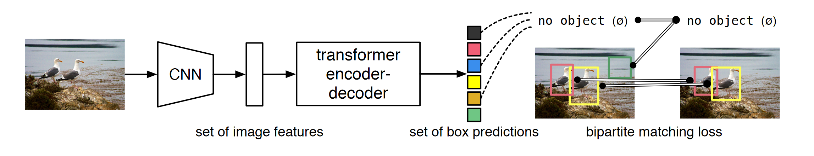
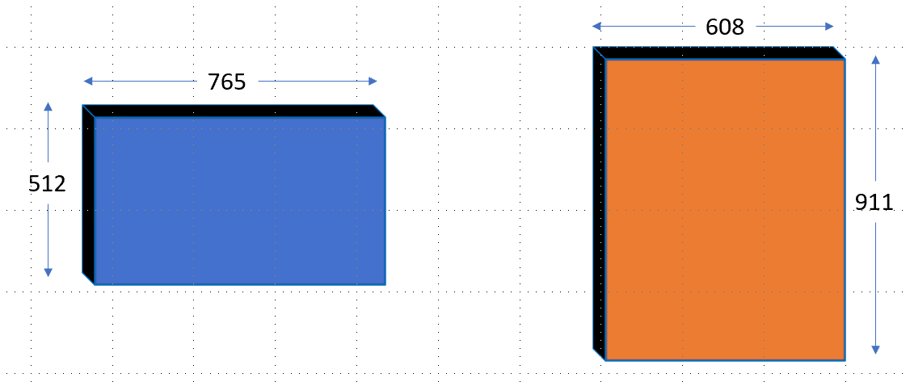
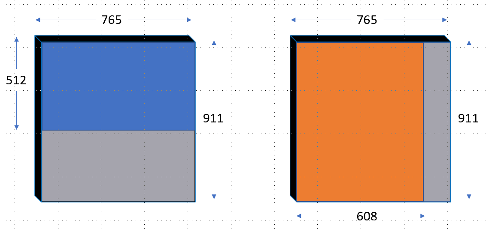
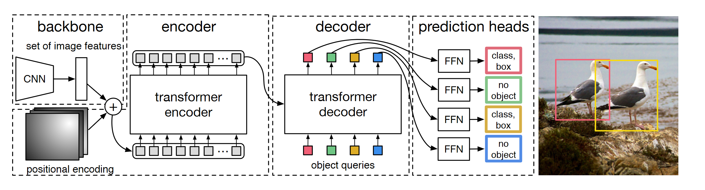

1 Foreword
Welcome to “The Annotated DETR”.
One of the most brilliant and well-explained articles I have read is The Annotated Transformer. It introduced Attention like no other post. The simple idea was to present an “annotated” version of the paper Attention is all you need along with code.
Something I have always believed in is that when you write things in code, the implementation and secrets become clearer. Nothing is hidden anymore. Reading the research paper with it’s code in front of me, is the best way for me to understand the paper.
There is nothing magic about magic. The magician merely understands something simple which doesn’t appear to be simple or natural to the untrained audience. Once you learn how to hold a card while making your hand look empty, you only need practice before you, too, can “do magic.”
– Jeffrey Friedl in the book Mastering Regular Expressions
The DETR Architecture might seem like magic at first with all it’s glitter and beauty too, but hopefully I would have uncovered that magic for you and revealed all the tricks by the time you finish reading this post. That is my goal -
To make it as simple as possible for the readers to understand how the DETR model works underneath.
In this post, I am not trying to reinvent the wheel, but merely bringing together a list of prexisting excellent resources to make it easier for the reader to grasp DETR. I leave it up to the reader to further build upon these foundations in any area they choose.
You can’t build a great building on a weak foundation. You must have a solid foundation if you’re going to have a strong superstructure.
– Gordon B. Hinckley
NOTE: All code referenced below has been copied from the official DETR implementation. Also, text directly quoted from the research paper is in Italics.
2 Introduction
We present a new method that views object detection as a direct set prediction problem. The main ingredients of the new framework, called DEtection TRansformer or DETR, are a set-based global loss that forces unique predictions via bi-partite matching, and a transformer encoder-decoder architecture. The new model is conceptually simple and does not require a specialized library, unlike many other modern detectors. DETR demonstrates accuracy and run-time performance on par with the well-established and highly-optimized Faster R-CNN baseline on the challenging COCO object detection dataset. Training code and pretrained models are available at https://github.com/facebookresearch/detr.
The goal of object detection is to predict a set of bounding boxes and category labels for each object of interest. Modern detectors address this set prediction task in an indirect way, by defining surrogate regression and classification problems on a large set of proposals, anchors, or window centers. Their performances are significantly influenced by postprocessing steps to collapse near-duplicate predictions, by the design of the anchor sets and by the heuristics that assign target boxes to anchors. To simplify these pipelines, we propose a direct set prediction approach to bypass the surrogate tasks. This end-to-end philosophy has led to significant advances in complex structured prediction tasks such as machine translation or speech recognition, but not yet in object detection: previous attempts either add other forms of prior knowledge, or have not proven to be competitive with strong baselines on challenging benchmarks. This paper aims to bridge this gap.
Our DEtection TRansformer (DETR, see Figure-1) predicts all objects at once, and is trained end-to-end with a set loss function which performs bipartite matching between predicted and ground-truth objects. DETR simplifies the detection pipeline by dropping multiple hand-designed components that encode prior knowledge, like spatial anchors or non-maximal suppression. Unlike most existing detection methods, DETR doesn’t require any customized layers, and thus can be reproduced easily in any framework that contains standard CNN and transformer classes.

DETR, however, obtains lower performances on small objects. Also, training settings for DETR differ from standard object detectors in multiple ways.
3 Data Preparation
The input images are batched together, applying \(0\)-padding adequately to ensure they all have the same dimensions \((H_0,W_0)\) as the largest image of the batch.
If you haven’t worked with COCO before, the annotations are in a JSON format and must be converted to tensors before they can be fed to the model as labels. Refer to the COCO website here for more information on data format.
3.1 Coco Detection Dataset
The CocoDetection class below inherits from torchvision.datasets.CocoDetection, and adds custom _transforms on top. There’s also ConvertCocoPolysToMask class that is able to prepare the dataset for both object detection and panoptic segmentation.
class CocoDetection(torchvision.datasets.CocoDetection):
def __init__(self, img_folder, ann_file, transforms, return_masks):
super(CocoDetection, self).__init__(img_folder, ann_file)
self._transforms = transforms
self.prepare = ConvertCocoPolysToMask(return_masks)
def __getitem__(self, idx):
img, target = super(CocoDetection, self).__getitem__(idx)
image_id = self.ids[idx]
target = {'image_id': image_id, 'annotations': target}
img, target = self.prepare(img, target)
if self._transforms is not None:
img, target = self._transforms(img, target)
return img, targetNote that in __getitem__, we first use torchvision.datasets.CocoDetection.__getitem__ to get img, target. The img here is returned as a PIL.Image instance and target is a list of Dicts for each annotation. Here, the img, target look like below:
img
>> <PIL.Image.Image image mode=RGB size=640x427 at 0x7F841F918520>
target
>> [{'segmentation': [[573.81, 93.88, 630.42, 11.35, 637.14, 423.0, 569.01, 422.04, 568.05, 421.08, 569.97, 270.43, 560.38, 217.66, 567.09, 190.79, 576.69, 189.83, 567.09, 173.52, 561.34, 162.0, 570.93, 107.31, 572.85, 89.08]], 'area': 24373.2536, 'iscrowd': 0, 'image_id': 463309, 'bbox': [560.38, 11.35, 76.76, 411.65], 'category_id': 82, 'id': 331291}, {'segmentation': [[19.19, 206.3, 188.07, 204.38, 194.79, 249.48, 265.8, 260.04, 278.27, 420.28, 78.68, 421.24, 77.72, 311.85, 95.0, 297.46, 13.43, 267.71, 21.11, 212.06]], 'area': 42141.60884999999, 'iscrowd': 0, 'image_id': 463309, 'bbox': [13.43, 204.38, 264.84, 216.86], 'category_id': 79, 'id': 1122176}]Next, we pass the img and target through self.prepare method which is an instance of ConvertCocoPolysToMask class, and perform pre-processing on the outputs from torchvision.datasets.CocoDetection.__getitem__.
img
>> <PIL.Image.Image image mode=RGB size=640x427 at 0x7F841F918520>
target
>> {'boxes': tensor([[560.3800, 11.3500, 637.1400, 423.0000], [ 13.4300, 204.3800, 278.2700, 421.2400]]), 'labels': tensor([82, 79]), 'image_id': tensor([463309]), 'area': tensor([24373.2539, 42141.6094]), 'iscrowd': tensor([0, 0]), 'orig_size': tensor([427, 640]), 'size': tensor([427, 640])}This is what happened inside the self.prepare method: 1. Converted boxes, labels, image_id, area.. to a tensor. 2. We no longer return segmentation masks since we are just working with Object Detection. 3. Filter out objects if iscrowd=1. 4. Convert annotation from \([X, Y, W, H]\) to \([X_1, Y_1, X_2, Y_2]\) format. 5. Filter out objects if \(X_2 < X_1\) or \(Y_2 < Y_1\).
I am going to skip over the source code of
ConvertCocoPolysToMaskbut you can find it here if interested. I am also going to skip over the transforms for brevity, but you can find them here if interested.
From the paper, transforms/augmentations that get applied are:
We use scale augmentation, resizing the input images such that the shortest side is at least 480 and at most 800 pixels while the longest at most 1333. To help learning global relationships through the self-attention of the encoder, we also apply random crop augmentations during training, improving the performance by approximately 1 AP. Specifically, a train image is cropped with probability 0.5 to a random rectangular patch which is then resized again to 800-1333.
The overall process of creating this dataset looks like below:
from detr.datasets.coco import make_coco_transforms, CocoDetection
coco_img_folder = '../../kaggle/mscoco/train2017/'
coco_ann_file = '../../kaggle/mscoco/annotations/instances_train2017.json'
# create train transforms as in paper
coco_train_tfms = make_coco_transforms('train')
coco_dset = CocoDetection(img_folder=coco_img_folder, ann_file=coco_ann_file, transforms=coco_train_tfms, return_masks=False)
# first item in dataset
coco_dset[0][0].shape
>> torch.Size([3, 800, 1066])
coco_dset[0][1]
>>
{'boxes': tensor([[0.5205, 0.6888, 0.9556, 0.5955],
[0.2635, 0.2472, 0.4989, 0.4764],
[0.3629, 0.7329, 0.4941, 0.5106],
[0.6606, 0.4189, 0.6789, 0.7815],
[0.3532, 0.1326, 0.1180, 0.0969],
[0.2269, 0.1298, 0.0907, 0.0972],
[0.3317, 0.2269, 0.1313, 0.1469],
[0.3571, 0.0792, 0.1481, 0.1481]]),
'labels': tensor([51, 51, 56, 51, 55, 55, 55, 55]),
'image_id': tensor([9]),
'area': tensor([258072.8281, 95516.1953, 106571.9219, 52219.3594, 4813.5459,
3565.9253, 7758.4976, 6395.6035]),
'iscrowd': tensor([0, 0, 0, 0, 0, 0, 0, 0]),
'orig_size': tensor([480, 640]),
'size': tensor([704, 938])}As can be seen, the coco_dset returns the image as a tensor and also returns the target which is of type Dict. But, right now, the images are of different shape, and we need to make them all to be of the same shape before they can be batched together and passed to the DETR model as input. Let’s see how that looks like next.
3.2 Tensor and Mask
From the paper - the input images are batched together, applying \(0\)-padding adequately to ensure they all have the same dimensions \((H_0,W_0)\) as the largest image of the batch.
Let’s suppose our batch_size is \(2\), where the first image is of shape [3, 765, 512] in blue and the second image is of shape [3, 608, 911] in orange. This has been shown in Figure-2 below:

This is how the collate function looks like:
def collate_fn(batch):
batch = list(zip(*batch))
batch[0] = nested_tensor_from_tensor_list(batch[0])
return tuple(batch)nested_tensor_from_tensor_list is responsible for zero padding the original images, to ensure they all have the same dimensions \((H_0,W_0)\) as the largest image of the batch. Let’s look at its source code:
def nested_tensor_from_tensor_list(tensor_list: List[Tensor]):
# TODO make this more general
if tensor_list[0].ndim == 3:
if torchvision._is_tracing():
# nested_tensor_from_tensor_list() does not export well to ONNX
# call _onnx_nested_tensor_from_tensor_list() instead
return _onnx_nested_tensor_from_tensor_list(tensor_list)
# TODO make it support different-sized images
max_size = _max_by_axis([list(img.shape) for img in tensor_list])
# min_size = tuple(min(s) for s in zip(*[img.shape for img in tensor_list]))
batch_shape = [len(tensor_list)] + max_size
b, c, h, w = batch_shape
dtype = tensor_list[0].dtype
device = tensor_list[0].device
tensor = torch.zeros(batch_shape, dtype=dtype, device=device)
mask = torch.ones((b, h, w), dtype=torch.bool, device=device)
for img, pad_img, m in zip(tensor_list, tensor, mask):
pad_img[: img.shape[0], : img.shape[1], : img.shape[2]].copy_(img)
m[: img.shape[1], :img.shape[2]] = False
else:
raise ValueError('not supported')
return NestedTensor(tensor, mask)This nested_tensor_from_tensor_list receives a tensor_list, which is a list of img tensors of varying shape - [[3, 608, 911], [3, 765, 512]]. We calculate the max_size in max_size = _max_by_axis([list(img.shape) for img in tensor_list]). This _max_by_axis function returns the maximum value for each axis. Therefore, the value of returned max_size is [3, 765, 911].
Next, our batch_shape is [len(tensor_list)] + max_size, which equals [2, 3, 765, 911] in our example so far.
Next, we define tensor and mask which are of shapes [2, 3, 765, 911] and [2, 765, 911] respectively.
tensor = torch.zeros(batch_shape, dtype=dtype, device=device)
mask = torch.ones((b, h, w), dtype=torch.bool, device=device)Finally, we fill the tensor and mask values with the img values which were of shapes [[3, 608, 911], [3, 765, 512]], and also set the mask values to be False inside the actual image shape.
for img, pad_img, m in zip(tensor_list, tensor, mask):
pad_img[: img.shape[0], : img.shape[1], : img.shape[2]].copy_(img)
m[: img.shape[1], :img.shape[2]] = FalseThis has been illustrated in Figure-3 below:

Here, the blue region and orange region in both respective resized images represent the filled values. For these blue and orange regions, the mask values are set to False, whereas in the grey region outside the mask values are set to True. In code, this looks like:
Can you guess the
tensorandmaskshapes?tensoris of shape[2, 3, 765, 911], where both images are zero-padded. The first image (Blue) is zero-padded in height, whereas the second image is zero-padded in width (Orange). Similarly, themaskhas shape[2, 765, 911]where the blue and orange regions represent valueFalse, and the gray region in Figure-3, represents valueTrue.
Finally, the nested_tensor_from_tensor_list returns a NestedTensor passing in tensor and mask - NestedTensor(tensor, mask). So what is this NestedTensor? Let’s look at that next.
3.3 NestedTensor
NestedTensor is a simple tensor class that puts tensors and masks together as below:
class NestedTensor(object):
def __init__(self, tensors, mask: Optional[Tensor]):
self.tensors = tensors
self.mask = mask
def to(self, device):
# type: (Device) -> NestedTensor # noqa
cast_tensor = self.tensors.to(device)
mask = self.mask
if mask is not None:
assert mask is not None
cast_mask = mask.to(device)
else:
cast_mask = None
return NestedTensor(cast_tensor, cast_mask)
def decompose(self):
return self.tensors, self.mask
def __repr__(self):
return str(self.tensors)As can be seen from the NestedTensor source code, it combines tensors and mask and stores them as self.tensors and self.mask attributes.
This NestedTensor class is really simple - it has two main methods: 1. to: casts both tensors and mask to device (typically "cuda") and returns a new NestedTensor containing cast_tensor and cast_mask. 2. decompose: returns tensors and mask as a tuple, thus decomposing the “nested” tensor.
import torch
from detr.util.misc import NestedTensor
# represents outputs from custom collate function that we looked at before
tensor = torch.randn(2, 3, 765, 911)
mask = torch.randn(2, 765, 911)
nested_tensor = NestedTensor(tensor, mask)
nested_tensor.tensors.shape
>> torch.Size([2, 3, 765, 911])
nested_tensor.mask.shape
>> torch.Size([2, 765, 911])And that’s it! This NestedTensor is what get’s fed as input to the DETR Backbone CNN in Figure-1.
4 The DETR Architecture
The overall DETR architecture is surprisingly simple and depicted in Figure-1 below. It contains three main components: a CNN backbone to extract a compact feature representation, an encoder-decoder transformer, and a simple feed forward network (FFN) that makes the final detection prediction.

The overall implementation of the DETR architecture has been shown below:
class DETR(nn.Module):
""" This is the DETR module that performs object detection """
def __init__(self, backbone, transformer, num_classes, num_queries, aux_loss=False):
super().__init__()
self.num_queries = num_queries
self.transformer = transformer
hidden_dim = transformer.d_model
self.class_embed = nn.Linear(hidden_dim, num_classes + 1)
self.bbox_embed = MLP(hidden_dim, hidden_dim, 4, 3)
self.query_embed = nn.Embedding(num_queries, hidden_dim)
self.input_proj = nn.Conv2d(backbone.num_channels, hidden_dim, kernel_size=1)
self.backbone = backbone
self.aux_loss = aux_loss
def forward(self, samples: NestedTensor):
features, pos = self.backbone(samples)
src, mask = features[-1].decompose()
assert mask is not None
hs = self.transformer(self.input_proj(src), mask, self.query_embed.weight, pos[-1])[0]
outputs_class = self.class_embed(hs)
outputs_coord = self.bbox_embed(hs).sigmoid()
out = {'pred_logits': outputs_class[-1], 'pred_boxes': outputs_coord[-1]}
if self.aux_loss:
out['aux_outputs'] = self._set_aux_loss(outputs_class, outputs_coord)
return outAll the magic happens inside backbone and transformer, which we will look at next.
5 Backbone
Starting from the initial image \(x_{img} ∈ R^3×H_0×W_0\) (with 3 color channels), a conventional CNN backbone generates a lower-resolution activation map \(f ∈ R^{C×H×W}\). Typical values we use are C = 2048 and H,W = \(\frac{H0}{32} , \frac{W0}{32}\).
class Backbone(BackboneBase):
"""ResNet backbone with frozen BatchNorm."""
def __init__(self, name: str,
train_backbone: bool,
return_interm_layers: bool,
dilation: bool):
backbone = getattr(torchvision.models, name)(
replace_stride_with_dilation=[False, False, dilation],
pretrained=is_main_process(), norm_layer=FrozenBatchNorm2d)
num_channels = 512 if name in ('resnet18', 'resnet34') else 2048
super().__init__(backbone, train_backbone, num_channels, return_interm_layers)Above we create a simple backbone that inherits from BackboneBase. The backbone is created using torchvision.models and supports all models implemented in torchvision. For a complete list of supported models, refer here.
As also mentioned above, the typical value for number of channels in the output feature map is 2048, therefore, for all models except resnet18 & resnet34, the num_channels variable is set to 2048. This Backbone accepts a three channel input image tensor of shape \(3×H_0×W_0\), where \(H_0\) refers to the input image height, and \(W_0\) refers to the input image width.
Since all the fun happens inside the BackboneBase class including the forward method, let’s look at that next.
5.1 BackboneBase
class BackboneBase(nn.Module):
def __init__(self, backbone: nn.Module, train_backbone: bool, num_channels: int, return_interm_layers: bool):
super().__init__()
for name, parameter in backbone.named_parameters():
if not train_backbone or 'layer2' not in name and 'layer3' not in name and 'layer4' not in name:
parameter.requires_grad_(False)
if return_interm_layers:
return_layers = {"layer1": "0", "layer2": "1", "layer3": "2", "layer4": "3"}
else:
return_layers = {'layer4': "0"}
self.body = IntermediateLayerGetter(backbone, return_layers=return_layers)
self.num_channels = num_channels
def forward(self, tensor_list: NestedTensor):
xs = self.body(tensor_list.tensors)
out: Dict[str, NestedTensor] = {}
for name, x in xs.items():
m = tensor_list.mask
assert m is not None
mask = F.interpolate(m[None].float(), size=x.shape[-2:]).to(torch.bool)[0]
out[name] = NestedTensor(x, mask)
return outThe forward method of BackboneBase accepts an instance of NestedTensor class that contains tensors and mask as we saw in secion Data preparation. BackboneBase then takes the tensors and passes that through self.body in xs = self.body(tensor_list.tensors), which is responsible for getting the output feature map of shape \(f ∈ R^{C×H×W}\), where \(C\) is typically set to 2048.
Note: The self.body either returns the output from the last layer of the backbone model, or from all intermediate layers and the final layer depending on the value of return_layers. For an introduction to IntermediateLayerGetter, please refer to torchvision docs.
The output of self.body is a Dict that looks something like {"0": <torch.Tensor>} or {"0": <torch.Tensor>, "1": <torch.Tensor>, "2": <torch.Tensor>...} depending on whether return_interm_layers is True or False. Finally, we iterate through this Dict output of self.body which we call xs, interpolate the mask to have the same \(H\) and \(W\) as the lower-resolution activation map \(f ∈ R^{C×H×W}\) output from Backbone and store both x and mask in NestedTensor as shown below:
for name, x in xs.items():
m = tensor_list.mask
assert m is not None
mask = F.interpolate(m[None].float(), size=x.shape[-2:]).to(torch.bool)[0]
out[name] = NestedTensor(x, mask)In summary, the Backbone is responsible for accepting an input NestedTensor that consists of the input image as tensors and a mask corresponding to the image. The backbone merely extracts the features from this input image, interpolates the mask to match the feature map size and returns them as a NestedTensor in a Dict. Let’s see the Backbone in action in code:
import torch
from detr.util.misc import NestedTensor
from detr.models.backbone import Backbone
# resnet-50 backbone
backbone = Backbone('resnet50', train_backbone=True, return_iterm_layers=False, dilation=False)
# create nested tensor, mimic output from dataset preparation as in last section
tensor = torch.randn(2, 3, 765, 911)
mask = torch.randn(2, 765, 911)
bb_input = NestedTensor(tensor, mask)
# get output from backbone
out = backbone(bb_input)
out.keys()
>> dict_keys(['0'])
out['0'].__class__
>> detr.util.misc.NestedTensor
out['0'].tensors.shape
>> torch.Size([2, 2048, 24, 29])
out['0'].mask.shape
>> torch.Size([2, 24, 29])Therefore, starting from the initial image \(x_{img} ∈ {3 x 765 x 911}\) (with 3 color channels), a conventional CNN backbone generates a lower-resolution activation map \(f ∈ R^{2048 x 24 x 29}\).
5.2 Positional Encoding
Going back to Figure-4, it can be seen that Positional Encodings are added to the output lower-resolution activation map from the Backbone CNN. Also, in Figure-5, it can be seen that Positional Encodings are also added to the Attention layer’s input at every Decoder layer. Thus, there are two types of Positional Encodings in DETR.
Since the transformer architecture is permutation-invariant, we supplement it with fixed positional encodings that are added to the input of each attention layer. We defer to the supplementary material the detailed definition of the architecture, which follows the one described in Attention Is All You Need.
There are two kinds of positional encodings in our model: spatial positional encodings and output positional encodings (object queries).
IMPORTANT : The spatial positional encodings are the ones that refer to the spatial positions \(H\) & \(W\) in the lower resolution feature map \(f ∈ R^{C x H x W}\). The output positional encodings are the ones that refer to the positions of the various objects in the image and these are always learnt.
There are two options to define the spatial positional encodings: 1. Fixed positional encodings (PositionEmbeddingSine) 2. Learned positional encodings (PositionEmbeddingLearned)
Below, we only look at PositionEmbeddingSine as an example:
class PositionEmbeddingSine(nn.Module):
"""
This is a more standard version of the position embedding, very similar to the one
used by the Attention is all you need paper, generalized to work on images.
"""
def __init__(self, num_pos_feats=64, temperature=10000, normalize=False, scale=None):
super().__init__()
self.num_pos_feats = num_pos_feats
self.temperature = temperature
self.normalize = normalize
if scale is not None and normalize is False:
raise ValueError("normalize should be True if scale is passed")
if scale is None:
scale = 2 * math.pi
self.scale = scale
def forward(self, tensor_list: NestedTensor):
x = tensor_list.tensors
mask = tensor_list.mask
assert mask is not None
not_mask = ~mask
y_embed = not_mask.cumsum(1, dtype=torch.float32)
x_embed = not_mask.cumsum(2, dtype=torch.float32)
if self.normalize:
eps = 1e-6
y_embed = y_embed / (y_embed[:, -1:, :] + eps) * self.scale
x_embed = x_embed / (x_embed[:, :, -1:] + eps) * self.scale
dim_t = torch.arange(self.num_pos_feats, dtype=torch.float32, device=x.device)
dim_t = self.temperature ** (2 * (dim_t // 2) / self.num_pos_feats)
pos_x = x_embed[:, :, :, None] / dim_t
pos_y = y_embed[:, :, :, None] / dim_t
pos_x = torch.stack((pos_x[:, :, :, 0::2].sin(), pos_x[:, :, :, 1::2].cos()), dim=4).flatten(3)
pos_y = torch.stack((pos_y[:, :, :, 0::2].sin(), pos_y[:, :, :, 1::2].cos()), dim=4).flatten(3)
pos = torch.cat((pos_y, pos_x), dim=3).permute(0, 3, 1, 2)
return posAs we already know from the Attention is all you need paper, the fixed positional encodings can be mathematically defined as:
\[ PE(pos, 2i) = \sin(\frac{pos}{10000^{\frac{2i}{d_{model}}}}) \tag{1} \]
\[ PE(pos, 2i) = \cos(\frac{pos}{10000^{\frac{2i}{d_{model}}}}) \tag{2} \]
where \(pos\) is the position and \(i\) is the dimension.
We defer the reader to Transformer Architecture: The Positional Encoding by Amirhossein Kazemnejad for more information on Positional Encodings.
As for the PositionalEncoding class, remember, the Backbone first converts input image tensor of shape \(3×H_0×W_0\) to a lower-resolution activation map of size \(f ∈ R^{C×H×W}\). Positional Encodings are added to this lower-resolution feature map. Since, we need to be able to define positions both along the x-axis and y-axis, therefore, we have y_embed and x_embed variables that increase in value by 1 every time boolean True is present in not_mask.
Next, we convert both pos_x and pos_y to be of dimension dim_t and finally take the alternate .sin() and .cos() to define pos_x and pos_y. In the end, pos becomes a concatenated tensor of pos_x and pos_y.
We do not look at Positional Encodings in detail as many a good resource exist on this topic. Also, the positional encodings have been utilized from the Attention Is All You Need paper as is.
5.3 Joiner
Since the transformer architecture is permutation-invariant, we supplement it with fixed positional encodings that are added to the input of each attention layer.
The Joiner class below, is merely a convenience class, that accepts a backbone and position_embedding as defined previously, and a NestedTensor as input. It then generates a lower-resolution activation map of size \(f ∈ R^{C×H×W}\) and positional embeddings of the same-size corresponding to the \(X\) and \(Y\) positions on the grid.
class Joiner(nn.Sequential):
def __init__(self, backbone, position_embedding):
super().__init__(backbone, position_embedding)
def forward(self, tensor_list: NestedTensor):
xs = self[0](tensor_list)
out: List[NestedTensor] = []
pos = []
for name, x in xs.items():
out.append(x)
# position encoding
pos.append(self[1](x).to(x.tensors.dtype))
return out, posLet’s see it in action below:
import torch
from detr.util.misc import NestedTensor
from detr.models.backbone import *
from detr.models.position_encoding import PositionEmbeddingSine
# create backbone, `Joiner` is what get's stored in DETR backbone, not `backbone`
backbone = Backbone('resnet50', True, False, False)
pos_embed = PositionEmbeddingSine(num_pos_feats=128, normalize=True)
joiner = Joiner(backbone, pos_embed)
# mimic input
tensor = torch.randn(2, 3, 765, 911)
mask = torch.randn(2, 765, 911)
bb_input = NestedTensor(tensor, mask)
# get output
out, pos = joiner(bb_input)
out[-1].__class__
>> detr.util.misc.NestedTensor
# reduced lower-resolution feature map output from backbone
out[-1].tensors.shape
>> torch.Size([2, 2048, 24, 29])
# positional encodings with same shape as lower-resolution feature map
pos[-1].shape
>> torch.Size([2, 256, 24, 29])5.4 Summary
Therefore, in the offical code implementation of DETR, the Backbone, is actually an instance on Joiner class (how confusing!), that accepts an input, which is of type NestedTensor (how confusing again!). The tensor and mask of this NestedTensor input have been zero-padded to ensure that all have the same dimensions \((H_0,W_0)\) as the largest image of the input batch. See Figure-3 for reference.
Finally, this NestedTensor instance, is passed on the Backbone to get outputs out & pos. Here, out is a list of NestedTensor, the length of the list depends on the value return_interm_layers. out[-1].tensors represents lower-resolution activation map \(f ∈ R^{C×H×W}\), where \(C\) has value 2048. And pos[-1] represents the spatial positional encodings \(pos ∈ R^{256×H×W}\) for each position on the grid.
6 DETR Transformer

Now, before we can move on and look at the DETR Transformer in code, it’s really crucial to first understand the bigger picture. So far we know that the backbone upon accepting an input returns out and pos, where out[-1].tensors.shape is \(f ∈ R^{2048×H×W}\) and pos[-1].shape is \(pos ∈ R^{256×H×W}\).
Before the out is passed to the transformer, the number of channels are reduced as mentioned in the paper.
First, a 1x1 convolution reduces the channel dimension of the high-level activation map \(f\) from \(C\) to a smaller dimension \(d\). creating a new feature map \(z_0 ∈ R^{d×H×W}\).
Here, \(d\) is set to 256, therefore, the new feature map size becomes \(f ∈ R^{256×H×W}\) which matches that of the positional encodings.
As also mentioned in the paper,
The encoder expects a sequence as input, hence we collapse the spatial dimensions of \(z_0\) into one dimension, resulting in a \(d×HW\) feature map.
Therefore, we can reshape both feature map and spatial positional encodings to shape \(696 x 1 x 256\) as shown in Figure-5 above. The overall Transformer can be implemented as below:
class Transformer(nn.Module):
def __init__(self, d_model=512, nhead=8, num_encoder_layers=6,
num_decoder_layers=6, dim_feedforward=2048, dropout=0.1,
activation="relu", normalize_before=False,
return_intermediate_dec=False):
super().__init__()
encoder_layer = TransformerEncoderLayer(d_model, nhead, dim_feedforward,
dropout, activation, normalize_before)
encoder_norm = nn.LayerNorm(d_model) if normalize_before else None
self.encoder = TransformerEncoder(encoder_layer, num_encoder_layers, encoder_norm)
decoder_layer = TransformerDecoderLayer(d_model, nhead, dim_feedforward,
dropout, activation, normalize_before)
decoder_norm = nn.LayerNorm(d_model)
self.decoder = TransformerDecoder(decoder_layer, num_decoder_layers, decoder_norm,
return_intermediate=return_intermediate_dec)
self._reset_parameters()
self.d_model = d_model
self.nhead = nhead
def _reset_parameters(self):
for p in self.parameters():
if p.dim() > 1:
nn.init.xavier_uniform_(p)
def forward(self, src, mask, query_embed, pos_embed):
# flatten NxCxHxW to HWxNxC
bs, c, h, w = src.shape
src = src.flatten(2).permute(2, 0, 1)
pos_embed = pos_embed.flatten(2).permute(2, 0, 1)
query_embed = query_embed.unsqueeze(1).repeat(1, bs, 1)
mask = mask.flatten(1)
tgt = torch.zeros_like(query_embed)
memory = self.encoder(src, src_key_padding_mask=mask, pos=pos_embed)
hs = self.decoder(tgt, memory, memory_key_padding_mask=mask,
pos=pos_embed, query_pos=query_embed)
return hs.transpose(1, 2), memory.permute(1, 2, 0).view(bs, c, h, w)Below, let’s look at the TransformerEncoder, TransformerEncoderLayer, TransformerDecoder and TransformerDecoderLayer in detail.
7 Transformer Encoder
Each encoder layer has a standard architecture and consists of a multi-head self-attention module and a feed forward network (FFN).
In terms of implementation, from this point on the Transformer architecture is implemented very similarly to the implementation as explained in The Annotated Transformer. But, for completeness, I will also share the implementations below.
The Transformer Encoder consists of multiple Transformer Encoder layers. Thus, it can be easily implemented as below:
class TransformerEncoder(nn.Module):
def __init__(self, encoder_layer, num_layers, norm=None):
super().__init__()
self.layers = _get_clones(encoder_layer, num_layers)
self.num_layers = num_layers
self.norm = norm
def forward(self, src,
mask: Optional[Tensor] = None,
src_key_padding_mask: Optional[Tensor] = None,
pos: Optional[Tensor] = None):
output = src
for layer in self.layers:
output = layer(output, src_mask=mask,
src_key_padding_mask=src_key_padding_mask, pos=pos)
if self.norm is not None:
output = self.norm(output)
return output_get_clones simply clones the Transformer Encoder layer (explained below), num_layers number of times and returns nn.ModuleList.
Below, the TransformerEncoderLayer has been implemented.
class TransformerEncoderLayer(nn.Module):
def __init__(self, d_model, nhead, dim_feedforward=2048, dropout=0.1,
activation="relu", normalize_before=False):
super().__init__()
self.self_attn = nn.MultiheadAttention(d_model, nhead, dropout=dropout)
# Implementation of Feedforward model
self.linear1 = nn.Linear(d_model, dim_feedforward)
self.dropout = nn.Dropout(dropout)
self.linear2 = nn.Linear(dim_feedforward, d_model)
self.norm1 = nn.LayerNorm(d_model)
self.norm2 = nn.LayerNorm(d_model)
self.dropout1 = nn.Dropout(dropout)
self.dropout2 = nn.Dropout(dropout)
self.activation = _get_activation_fn(activation)
self.normalize_before = normalize_before
def with_pos_embed(self, tensor, pos: Optional[Tensor]):
return tensor if pos is None else tensor + pos
def forward(self, src,
src_mask: Optional[Tensor] = None,
src_key_padding_mask: Optional[Tensor] = None,
pos: Optional[Tensor] = None):
src2 = self.norm1(src)
q = k = self.with_pos_embed(src2, pos)
src2 = self.self_attn(q, k, value=src2, attn_mask=src_mask,
key_padding_mask=src_key_padding_mask)[0]
src = src + self.dropout1(src2)
src2 = self.norm2(src)
src2 = self.linear2(self.dropout(self.activation(self.linear1(src2))))
src = src + self.dropout2(src2)
return srcIt’s really straightforward, we accept an input which is called src, it is normalized using nn.LayerNorm, and finally we set the query and key matrices \(q\) and \(k\) as the same by adding positional encoding to the normalized input. Finally, self-attention operation is performed to get src2 as the output. In this case, since we can attend to anywhere in the sequence - both forwards and backwards, attn_mask is set to None. Whereas, the key_padding_mask are the elements in the key that are ignored by attention.
As per the PyTorch Docs for key_padding_mask, when given a binary mask and a value is True, the corresponding value on the attention layer will be ignored. We already from Data Preparation section that mask is set to True for the gray area in Figure-3, thus, it makes sense to not attend to these positions.
Next, let’s look at the TransformerDecoder!
8 Transformer Decoder
The decoder follows the standard architecture of the transformer, transforming \(N\) embeddings of size \(d\) using multi-headed self-attention and encoder-decoder attention mechanisms. The difference with the original transformer is that our model decodes the \(N\) objects in parallel at each decoder layer, while Vaswani et al. use an autoregressive model that predicts the output sequence one element at a time. We refer the reader unfamiliar with the concepts to the supplementary material. Since the decoder is also permutation-invariant, the \(N\) input embeddings must be different to produce different results. These input embeddings are learnt positional encodings that we refer to as object queries, and similarly to the encoder, we add them to the input of each attention layer. The N object queries are transformed into an output embedding by the decoder. They are then independently decoded into box coordinates and class labels by a feed forward network (described in the next subsection), resulting \(N\) final predictions. Using self-attention and encoder-decoder attention over these embeddings, the model globally reasons about all objects together using pair-wise relations between them, while being able to use the whole image as context.
Similar to the Transformer Encoder, the Transformer Decoder consists of repeated Transformer Decoder layers and can be easily implemented as below:
class TransformerDecoder(nn.Module):
def __init__(self, decoder_layer, num_layers, norm=None, return_intermediate=False):
super().__init__()
self.layers = _get_clones(decoder_layer, num_layers)
self.num_layers = num_layers
self.norm = norm
self.return_intermediate = return_intermediate
def forward(self, tgt, memory,
tgt_mask: Optional[Tensor] = None,
memory_mask: Optional[Tensor] = None,
tgt_key_padding_mask: Optional[Tensor] = None,
memory_key_padding_mask: Optional[Tensor] = None,
pos: Optional[Tensor] = None,
query_pos: Optional[Tensor] = None):
output = tgt
intermediate = []
for layer in self.layers:
output = layer(output, memory, tgt_mask=tgt_mask,
memory_mask=memory_mask,
tgt_key_padding_mask=tgt_key_padding_mask,
memory_key_padding_mask=memory_key_padding_mask,
pos=pos, query_pos=query_pos)
if self.return_intermediate:
intermediate.append(self.norm(output))
if self.norm is not None:
output = self.norm(output)
if self.return_intermediate:
intermediate.pop()
intermediate.append(output)
if self.return_intermediate:
return torch.stack(intermediate)
return output.unsqueeze(0)The main difference is the option to return intermediate outputs for Auxilary losses (we’ll look at losses later in the blog post). If self.return_intermediate is set to True, stacked output from every decoder layer is returned otherwise, output from the last decoder layer is returned.
8.1 Transformer Decoder Layer
As for the Transformer Decoder layer, its implementation is also very similar to the Transformer Encoder layer.
class TransformerDecoderLayer(nn.Module):
def __init__(self, d_model, nhead, dim_feedforward=2048, dropout=0.1,
activation="relu", normalize_before=False):
super().__init__()
self.self_attn = nn.MultiheadAttention(d_model, nhead, dropout=dropout)
self.multihead_attn = nn.MultiheadAttention(d_model, nhead, dropout=dropout)
# Implementation of Feedforward model
self.linear1 = nn.Linear(d_model, dim_feedforward)
self.dropout = nn.Dropout(dropout)
self.linear2 = nn.Linear(dim_feedforward, d_model)
self.norm1 = nn.LayerNorm(d_model)
self.norm2 = nn.LayerNorm(d_model)
self.norm3 = nn.LayerNorm(d_model)
self.dropout1 = nn.Dropout(dropout)
self.dropout2 = nn.Dropout(dropout)
self.dropout3 = nn.Dropout(dropout)
self.activation = _get_activation_fn(activation)
self.normalize_before = normalize_before
def with_pos_embed(self, tensor, pos: Optional[Tensor]):
return tensor if pos is None else tensor + pos
def forward(self, tgt, memory,
tgt_mask: Optional[Tensor] = None,
memory_mask: Optional[Tensor] = None,
tgt_key_padding_mask: Optional[Tensor] = None,
memory_key_padding_mask: Optional[Tensor] = None,
pos: Optional[Tensor] = None,
query_pos: Optional[Tensor] = None):
tgt2 = self.norm1(tgt)
q = k = self.with_pos_embed(tgt2, query_pos)
tgt2 = self.self_attn(q, k, value=tgt2, attn_mask=tgt_mask,
key_padding_mask=tgt_key_padding_mask)[0]
tgt = tgt + self.dropout1(tgt2)
tgt2 = self.norm2(tgt)
tgt2 = self.multihead_attn(query=self.with_pos_embed(tgt2, query_pos),
key=self.with_pos_embed(memory, pos),
value=memory, attn_mask=memory_mask,
key_padding_mask=memory_key_padding_mask)[0]
tgt = tgt + self.dropout2(tgt2)
tgt2 = self.norm3(tgt)
tgt2 = self.linear2(self.dropout(self.activation(self.linear1(tgt2))))
tgt = tgt + self.dropout3(tgt2)
return tgtThe TransformerDecoderLayer requires a bit more attention than TransformerEncoderLayer (pun intended). First, the tgt variable in this case is just a bunch of zeroes of shape \(100 x 1 x 256\) which represents Object Queries as in Figure-5.
The difference with the original transformer is that the DETR model decodes the \(N\) objects in parallel at each decoder layer, while Vaswani et al. used an autoregressive model that predicts the output sequence one element at a time. Since the decoder is also permutation-invariant, the \(N\) input embeddings must be different to produce different results. These learnt positional encodings are called object queries and as can be seen in Figure-5, similar to the Encoder, these object queries are also added to the input at each attention layer in the Decoder.
The Decoder layer can be divided into three parts: 1. Multi-Head self-attention (on object queries, output positional encodings) 2. Multi-Head Attention (Output from 1st part + output positional encodings, Output from encoder + Spatial Positional encodings) 3. Feed Forward Neural Network
IMO, to make things crystal clear, it is important to note what’s going on in each of the Attention layers inside the Decoder.
For the first Multi-Head Self-Attention layer, the Q, K & V values are: 1. Query: Object queries (tgt, initialized as zeroes) + output positional encodings (qpos, learned positional encodings, initialized as nn.Embedding in PyTorch) 2. Key: Object queries (tgt, initialized as zeroes) + output positional encodings (qpos, learned positional encodings, initialized as nn.Embedding in PyTorch) 3. Value: Object queries (tgt)
Note that the Query and Key values are the same in the first attention layer, hence, self-attention.
For the second Multi-Head Attention layer, the Q, K & V values are: 1. Query: Output from first Multi-Head Self-Attention layer (tgt) + ouput positional encodings (qpos) 2. Key: Output from encoder (memory) + Spatial Positional Encodings (pos) 3. Value: Output from encoder (memory)
Therefore, it’s in the second attention layer that the Decoder interacts with/attends to the outputs from the Encoder and starts updating the input Object queries to possible object location information.
As can be seen from Figure-5, the output from the Decoder is of shape \(6x1x100x256\), because it contains output from all Decoder layers, which is finally fed to Class FFN and Box FFN for bounding box prediction and classification.
Next, we calculate the loss on the outputs of the Decoder, and continue this process over and over again, until the model learns to classify and locate the various objects in the input images. I am going to skip over the loss function for now, but that will be introduced in a separate blog post in the next few days.
9 Conclusion
I hope that as part of this blog post, I’ve been able to explain the DETR architecture, and IMHO, this blog post is feature complete, barring the loss function, that will be added later.
As usual, in case I have missed anything or to provide feedback, please feel free to reach out to me at @amaarora.
Also, feel free to subscribe to my blog here to receive regular updates regarding new blog posts. Thanks for reading!
subscribe.html